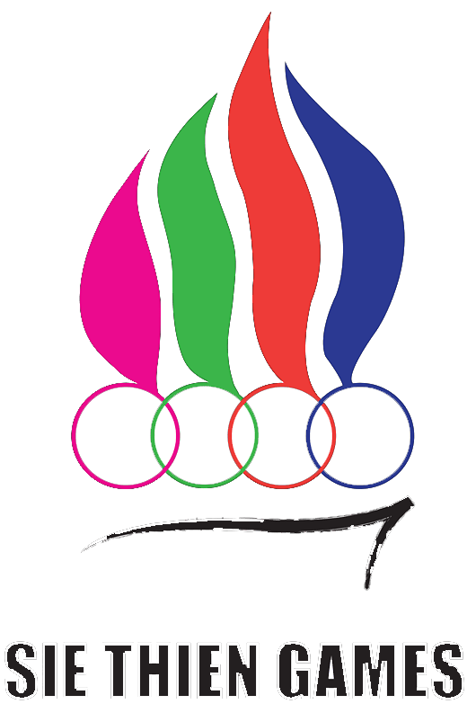

เปลวไฟจากเทียนสัญลักษณ์ของความเป็นครุศาสตร์ ผสานกับเปลวไฟ
ของคบเพลิงอันเป็นสัญลักษณ์ของการแข่งขันกีฬา อยู่บนห่วงวงกลมหลากสี
โดยเป็นตัวแทนจาก 4 มหาวิทยาลัย อันได้แก่
สถาบันเทคโนโลยีพระจอมเกล้าเจ้าคุณทหารลาดกระบัง
มหาวิทยาลัยเทคโนโลยีพระจอมเกล้าพระนครเหนือ
มหาวิทยาลัยเทคโนโลยีพระจอมเกล้าธนบุรี
และมหาวิทยาลัยเทคโนโลยีราชมงคลธัญบุรี ซึ่งคล้องรวมกัน
บ่งบอกถึงความสมัครสมานสามัคคีในการแข่งขันกีฬาร่วมกัน
และทั้งหมดได้ตั้งอยู่บนต้นเทียนซึ่งเป็นรากฐานอันสำคัญของชาวครุศาสตร์อุตสาหกรรมฯ